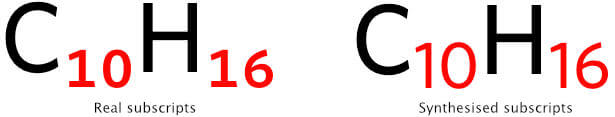
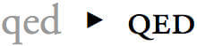
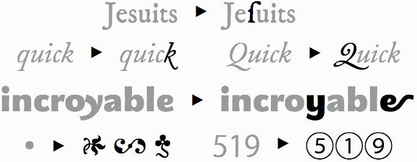
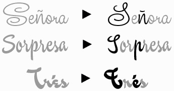

Web Typography
where East meets West
“I imagined the web as an open platform that would allow everyone everywhere to share information, access opportunities and collaborate across geographic and cultural boundaries.”
—Sir Tim Berners-Lee
“A great deal of the content available to Asian users is simply translated into local languages and does not reflect the significant cultural diversity found across the region.”
—Consumer barriers to mobile internet adoption in Asia
Unicode
Unicode provides a unique number for every character,
no matter what the platform,
no matter what the program,
no matter what the language.
“Typography is writing with prefabricated letters”
—Gerrit Noordzij
Phoenician alphabet
甲骨文
Hippopotamus
(English) 12 letters
河马
Lebensgefährte
(German) 14 letters
伴侣
Grianghrafadóireachta
(Irish) 21 letters
摄影


Web characteristics
- Later binding
- Multiple outputs
- Partial control
- Uncertain delivery
The web is a unique medium on its own.
Font formats for web use
| WOFF2 (Web Open Font Format 2) |


|
| WOFF (Web Open Font Format) |
|
| OTF (OpenType) |

|
| TTF (TrueType) |

|
| EOT (Embedded Open Type) |
|
| SVG (Scalable Vector Graphics) |

|
@font-face rule
@font-face {
font-family: 'Magnetic Pro';
src: url('../fonts/magnetic-pro-light.woff2') format('woff2'),
url('../fonts/magnetic-pro-light.woff') format('woff');
}Declare your Latin fonts first
font-family: 'Gentium Basic', 'PingFang TC', 'Microsoft JhengHei', '微軟正黑體', 'Heiti TC', '黑體-繁', sans-serif;Font rendering for Mac and Windows is different, and sometimes the Latin characters in Chinese fonts don't look good on Windows.
Put your font names in quotes. Just in case.
Generic font families
Dependent on OS, HTML language, character set and browser.
| serif （襯線字體） |
Times New Roman, SimSun, SongTi SC |
| sans-serif （無襯線字體） |
Arial, Microsoft Yahei, PingFang SC |
| monospace （等寬字體） |
Consolas, SimSun, PingFang SC |
| cursive （手寫字體） |
Comic Sans MS, Apple Chancery, SimSun (oblique), SongTi SC (oblique) |
| fantasy （夢幻字體） |
Gabriola, Impact, Papyrus, Microsoft Yahei, PingFang SC |
Level 4 is adding system-ui, emoji, math and fangsong
Basic font properties
font-weight |
Specifies the weight of the glyphs in the font. Can use keywords or numerical values. |
font-stretch |
Selects a normal, condensed or expanded face from a font family. Range spans over 9 keywords. |
font-style |
Allows italic or oblique faces to be selected. |
font-size |
Indicates the desired height of the glyphs. Takes absolute or relative values. |
font-size-adjust |
Adjusts the font-size to preserve the x-height of the first choice font. |
font-synthesis |
Controls whether user agents are allowed to synthesize bold or oblique font faces when missing. |
Using non-system fonts
The @font-face rule allows us to link to fonts, either locally or external, which are fetched and activated when needed.
We can use multiple @font-face rules to construct font families.
A rule consists of the @font-face keyword followed by a block of font descriptors.
Anatomy of an @font-face rule
@font-face {
font-family: <family-name>
src: [ <url> [format(<string> #)]? | <font-face-name> ] #
font-style: normal | italic | oblique
font-weight: normal | bold | 100 | 200 | 300 | 400 | 500 | 600 | 700 | 800 | 900
font-stretch: normal | ultra-condensed | extra-condensed | condensed | semi-condensed | semi-expanded | expanded | extra-expanded | ultra-expanded
unicode-range: <urange> #
font-variant: normal | none | [ <common-lig-values> || <discretionary-lig-values> || <historical-lig-values> || <contextual-alt-values> || stylistic(<feature-value-name>) || historical-forms || styleset(<feature-value-name> #) || character-variant(<feature-value-name> #) || swash(<feature-value-name>) || ornaments(<feature-value-name>) || annotation(<feature-value-name>) || [ small-caps | all-small-caps | petite-caps | all-petite-caps | unicase | titling-caps ] || <numeric-figure-values> || <numeric-spacing-values> || <numeric-fraction-values> || ordinal || slashed-zero || <east-asian-variant-values> || <east-asian-width-values> || ruby ]
font-feature-settings: normal | <feature-tag-value> #
}/* fallback font - size: 4.5MB */
@font-face {
font-family: DroidSans;
src: url(DroidSansFallback.woff);
/* no range specified, defaults to entire range */
}
/* Japanese glyphs - size: 1.2MB */
@font-face {
font-family: DroidSans;
src: url(DroidSansJapanese.woff);
unicode-range: U+3000-9FFF, U+ff??;
}
/* Latin, Greek, Cyrillic along with some punctuation and symbols - size: 190KB */
@font-face {
font-family: DroidSans;
src: url(DroidSans.woff);
unicode-range: U+000-5FF, U+1e00-1fff, U+2000-2300;
}Font feature properties (1/2)
font-kerning
|
font-variant-position

|
font-variant-position-ligatures

|
font-variant-numeric

|
font-variant-caps

|
font-variant-alternates

|
Font feature properties (2/2)
font-variant-east-asian
|
font-language-override

|
font-feature-settings
Provides low-level control of advanced OpenType features |


“Be formless, shapeless, like water. Now you put water into a cup, it becomes the cup. You put water into a bottle, it becomes the bottle. You put it in a teapot, it becomes the teapot. Now water can flow, or it can crash. Be water, my friend.”
—Bruce Lee
Looks familiar?
The magic of Writing Modes
CSS Writing Modes Level 3 defines CSS features to support for various international writing modes, such as left-to-right (e.g. Latin or Indic), right-to-left (e.g. Hebrew or Arabic), bidirectional (e.g. mixed Latin and Arabic) and vertical (e.g. Asian scripts).
You can make your browser literally turn on its side from left-to-right.
🙃Or make it read from right-to-left.
🙂Vertical text is fun!


writing-mode property
| horizontal-tb | 从1987到现在 |
| vertical-rl | 从1987到现在 |
| vertical-lr | 从1987到现在 |
| sideways-rl* | 从1987到现在 |
| sideways-lr* | 从1987到现在 |
text-orientation property
text-combine-upright property
Typography suggestions
- Use and declare the correct font-family
- Make sure the font-size is large enough
- Set
line-heightfor sufficient breathing room - Use
text-align: justify - Keep lines to around 25-35 characters
- Set a
margin-bottomfor thepelement


Willem de Kooning
If Jackson Pollock was the public face of the New York avant-garde, Willem de Kooning could be described as an artist’s artist, who was perceived by many of his peers as its leader. He was born in Rotterdam, where he grew up in an impoverished household and attended the Rotterdam Academy, training in fine and commercial arts. In 1926, the adventurous young artist stowed away on a ship bound for Argentina. While the ship was docked in Virginia, de Kooning slipped off, skirted immigration, and made his way to New Jersey—and so began the rest of his life.
CSS Logical Properties


A long list of references
- Consumer barriers to mobile internet adoption in Asia
- The Relationship between Local Content, Internet Development and Access Prices
- Usage of content languages for websites
- No @font-face Syntax will ever be Bulletproof, Nor Should It Be.
- 字体漫谈
- Source Han Serif / Noto Serif CJK History & Development
- Chinese Fonts & Related Issues
- Zhang, X. & Han, Q. (2009). The history of Chinese printing: (illustrated). Paramus, N.J: Homa et Sekey Books.
- Brokaw, C. & Reed, C. A. (2010). From woodblocks to the Internet: Chinese publishing and print culture in transition, circa 1800 to 2008. Leiden: Brill.
- Tsien T. (2011). Collected writings on Chinese culture. Hong Kong: The Chinese University Press.
- Tsien, T. & Shaughnessy, E. L. (2013). Written on bamboo & silk: the beginnings of Chinese books & inscriptions. Chicago: The University of Chicago Press.
- Houston, K. (2016). The book: a cover-to-cover exploration of the most powerful object of our time. New York: W.W. Norton & Company.
- 厉致谦 (2013). 西文字体的故事. 上海市: 同济大学出版社.
- Choi, K. E., & Kim, M. S. (2015). A Comparative Study on the Sociocultural Drivers in the Development of Printing Technology in Korea and Europe. Korea Journal, 55(4), 7-35.
- Park, H. O. (2014). The History of Pre-Gutenberg Woodblock and Movable Type Printing in Korea. International Journal of Humanities and Social Science, 4(9), 1.
- Haralambous, Y., & Horne, P. S. (2007). Fonts & encodings.